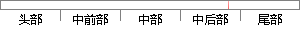

因此我们需要找到一些合适的办法来改进我们的模型。
片段位置图

相似结果|
相似片段 1：为了找到合适的加法链这需要成千上万的尝试。为了比较快速地找到短加法链，我们的思想作一个相对比较好的穷尽搜索办法。比较准确的说法是减少整数七’的选择，选择范围在区间W2，明中，这样得到的加法链会更短一些
相似片段 2：我们知道，需要最大化的目标函数是高度非线性、锯齿状的非凹(ConcaVe)函数。那么首先，我们需要找到一个合适的辅助函数来近似这个目标函数，使得辅助函数既能够反映目标函数的某些特点，还能够拥有一些
相似片段 3：的手段来解决问题。要想找到问题的根源有时候需要一些方法，解决问题的办法有很多种，可以拓展思维，去寻找各种不同的方法，只要有效的都是好方法。比如在维修设备时，我们通常使用“五字”操作法（听、摸、擦、看
|
※ 片段修改建议 ※
近似词参考：- 因此：是以 因而
- 我们：咱们
- 需要：必要
- 合适：适合 符合
- 办法：法子 举措 门径 设施 措施
- 改进：改良 改善 革新
- 我们：咱们
- 模型：模子
系统自动生成语句：是以咱们必要找到一些适合的法子来改良咱们的模子。
注：本片段修改建议为系统自动生成，仅供参考。